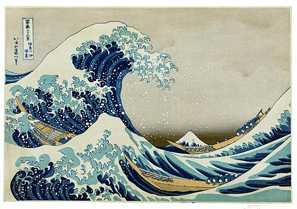
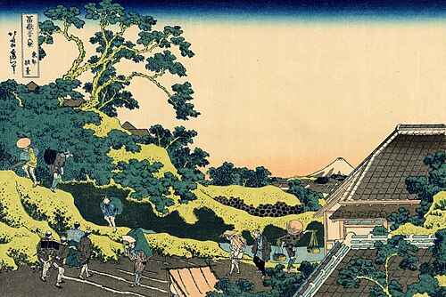
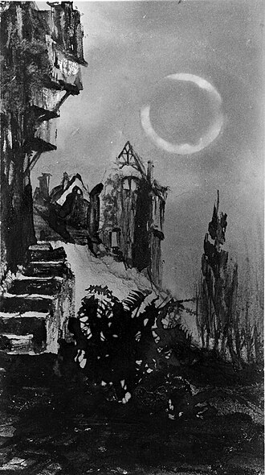
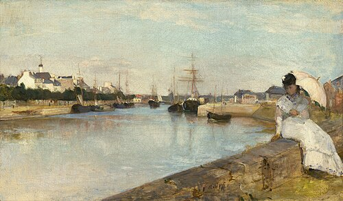

מחכה
Yosef Haim
Printmaker · Haifa · נשלח לפני 5 ימים
Woodblock prints of the port, in the evening, by hand.




2 מתוך 3 · אמנים מחכים
Printmaker · Haifa · נשלח לפני 5 ימים
Woodblock prints of the port, in the evening, by hand.



